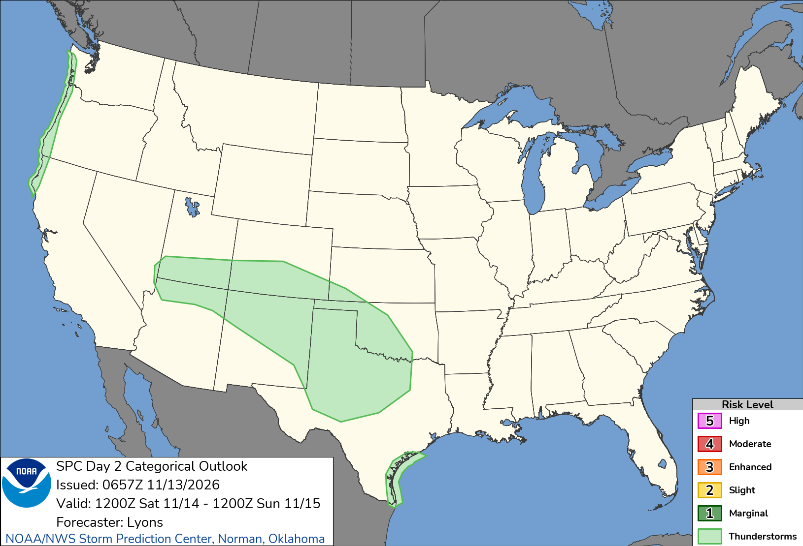

No hazardous weather expected (HWO)Roads: wet pavement only during rain windows above.
CLEAR
HAZARDOUS WX OUTLOOK
NONE
Today/Tonight: Lake effect showers return today with some periods of snow mixing
in, mainly during the morning hours. Minor slushy coating of
accumulation is possible. Days 2–7: No hazardous weather is expected at this time. HWO DTX · 409 AM EST Fri Nov 13 2026
48H RANGE
High 44°F Sat 2 PM · Low 28°F Sat 1 AM Max sustained wind 12 mph N (Fri 11 AM) Max gust 22 mph (Friday)
WEATHER INTEL · MITTEN MAFIA FIELDS, MI · SOURCE NWS / SPC01 / 07
WEATHER INTEL · SPEC OPSFETCHED NOV 13, 2026 · 5:11 AM EDT
Scheduled Ops
Calendar events matched to Mitten Mafia Fields · forecast for each event window
SCHEDULED OPS · NEXT 14 DAYS
NONE
No upcoming calendar events match this locationMatched on: mitten mafia, carpenter (title / location / address)
14 DAYS
Flags: precip ≥40%, thunderstorms, sustained wind ≥20 mph, gusts ≥30 mph, temp ≤35°F or ≥88°F, any active NWS alert. Only title, time and location are shown.
WEATHER INTEL · MITTEN MAFIA FIELDS, MI · SOURCE NWS / SPC02 / 07
WEATHER INTEL · SPEC OPSFETCHED NOV 13, 2026 · 5:11 AM EDT
Current Conditions
KFNT · Flint, Bishop International Airport · observed 4:00 AM ET
TEMP
36°F
Dewpoint 32°F · RH 87%
WIND
8mph
From NNW (330°) · gust none reported
VISIBILITY
10mi
Cloudy · pressure 29.89 inHg
DTX KEY MESSAGES · AFD 359 AM EST Fri Nov 13 2026
KEY
Lake effect showers return today with some periods of snow mixing in, mainly during the morning hours.
NWS DTX
KEY
Minor slushy coating of accumulation is possible across parts of the Thumb and St. Clair River vicinity.
NWS DTX
KEY
Showers steadily shift offshore tonight and Saturday, then turning drier and warm next week.
NWS DTX
CLIMATE NOTE
NOTE
A highly amplified omega pattern has settled in over the entirety of CONUS this morning, with Southeast Michigan positioned within the eastern longwave trough axis. The primary vicinity upper low eventually centers over Pennsylvania today, but its cyclonic wind field will preserve northerly flow throughout the day. This dislodges a pocket of colder Canadian air across the broader Great Lakes region, marked by 850 mb temperatures of 5 to 10 C below zero. Latest Lake Huron water temperatures are estimated around 10C, yielding a delta of 15-20C. In combination with favorable fetch, over lake instability supports the continuation of lake effect showers through the morning hours, with an expansion in coverage likely. Forecast soundings still support a wide range of precipitation outcomes given the underlying thermodynamics. The most likely time-frame for snow to mix in or become established as the dominant precipitation type is more likely to occur between 09Z and 15Z when the boundary-layer could support a nearly frozen parcel path. The main limiting factor that could favor more persistence for rainfall is the subtle backing of 850 mb/7 kft winds toward the NNW, introducing a disruptive drying component at the top of the saturation layer and the bottom of the DGZ. As for model trends, local probabilistic guidance and the NBM have steeply declined in the spatial coverage of accumulating snow. Additionally, the areas that could see some accumulations, are now expected to be more limited, mainly downstream of The Thumb, and along the immediate southern Lake Huron shoreline. This requires more resilient convergence bands to persist, and then reorient with the subtle backing of controlling lower column flow. A survey of recent observations show a lag in cooling/drying which kept dewpoints above freezing for many locations into the early morning hours. At press time, no observing equipment were reporting snowfall. The sites to keep an eye on for today should be KCFS, KBAX, and KPHN. Should DGZ saturation, wet-bulb cooling, and supporting forcing properly align with sufficient snowfall rates materialize before temperatures diurnally rise, measurable snowfall still possible for the aforementioned locations, but this scenario is becoming less likely and primarily reserved for elevated surfaces. And snow-composed shower activity transitions to rain or melting snow by late morning, and into the afternoon period as flow orients NNW. This shifts most of the residual lake effect activity further east, favoring the eastern portions of Huron, Sanilac, and (northeastern) St. Clair Clair Counties. Temperatures should come in 5 to 10 F below normal, in the lower 40s, but with sustained winds of 10 to 15 mph, wind chills will start out in the 20s for a few locations. Some lake effect precipitation will exists along the same corridor overnight. A secondary upper low within the eastern flank of the blocking pattern will travel from north to south over the eastern half of the Great Lakes, in tandem with a similarly oriented mid-level speed max on Saturday. Lake-relevent trajectories should be more northwesterly at this time, which limits the viability of lake effect showers. The bulk of showers should again be limited to the St. Clair River vicinity. A couple degrees in thermal rebound could lift readings into the mid 40s Saturday, aided by weak warm advection. The longwave ridge begins to move eastward into the area Saturday night, with the downstream inflection point overhead Sunday. 1030 mb surface high pressure builds into southern Lower Michigan with time. The synoptic ridge then bisects the forecast area Monday as surface flow weakens and flips southwesterly as the center of the surface wave tracks into eastern Ohio. A warming trend is then forecast through next week as the ridge feature anchors over southern Appalachia with milder Gulf-modifed air lifting in. A progressive and deepening Pacific wave unblocks the configuration mid-week, but is expected to pivot over the Upper Midwest, likely keeping the local area dry through the forecast window. && .MARINE... Northerly flow will hold today before backing northwest through the weekend. This prolonged northerly flow will support efficient mixing of some stronger winds aloft down to the surface as cooler air remains in place. This will produce wind gusts around 25 knots along with elevated wave heights along the Lake Huron shoreline, where Small Craft Advisories remain in effect. Additionally, near surface convergence has supported lake effect rain bands across the central and southern Lake Huron basins, which will persist into tomorrow. Breezy conditions will start to wind down on Sunday once high pressure builds in over the southern Great Lakes. This will bring a period of lighter winds along with dry weather early next week. && .PREV DISCUSSION... Issued at 1209 AM EST Fri Nov 13 2026 AVIATION... A mix of MVFR and VFR ceilings scattered across the southeast Michigan as a robust lake effect response is getting underway. A south Lake Huron band is developing at the start of this TAF period with another dominant band forecast to develop off of Saginaw Bay later this morning. This puts FNT and DET with the higher likelihood to be most impacted downstream of these two lake bands. It may be cold enough at FNT for a more prevailing snow p-type by this afternoon with DET warm enough for more of a mix of rain and snow. Lake clouds will maintain MVFR ceilings with pockets of IFR possible. There is potential for scattered rain/snow showers across other terminals as well. Shifting lower level winds towards the NW this evening will begin to direct lake bands east of the terminal corridor with some improvement in ceilings possible. For DTW... Lake effect response is getting underway across south Lake Huron. The more dominant band looks to set up closer towards DET. However, pieces of this activity could break off and reach DTW. This would be more focused late morning and early afternoon. Temperatures would be warm enough to support a rain-snow mix in this outcome with minimal if any accumulation. DTW THRESHOLD PROBABILITIES... * High for ceilings at or below 5,000 feet through this afternoon. * High for p-type as rain through much of tonight. Medium for rain- snow with any precip towards mid morning into the early afternoon. && .DTX WATCHES/WARNINGS/ADVISORIES... MI...None. Lake Huron...Small Craft Advisory until 10 PM EST Saturday for LHZ421-422- 441>443. Lake St Clair...Small Craft Advisory until 4 AM EST early this morning for LCZ460. Michigan waters of Lake Erie...Small Craft Advisory until 4 AM EST early this morning for LEZ444. && $$ DISCUSSION...KGK MARINE.......AM AVIATION.....AA You can obtain your latest National Weather Service forecasts online at www.weather.gov/detroit.
RADARKDTX LATEST SWEEP
NWS RIDGE
WEATHER INTEL · MITTEN MAFIA FIELDS, MI · SOURCE NWS / SPC03 / 07
WEATHER INTEL · SPEC OPSFETCHED NOV 13, 2026 · 5:11 AM EDT
Daily Outlook
Next 36 hours · NWS hourly forecast + gridpoint gusts · ET
NOWCAUTION
36°F
Cloudy · wind 8 mph RAIN 43%
NEXT 6HCAUTION
38°F
Rain And Snow Likely Range 32–38° · precip 55% · wind 10 g20 RAIN 55% · COLD 32°
WEATHER INTEL · MITTEN MAFIA FIELDS, MI · SOURCE NWS / SPC04 / 07
WEATHER INTEL · SPEC OPSFETCHED NOV 13, 2026 · 5:11 AM EDT
7-Day Forecast
NWS DTX · Mitten Mafia Fields, MI · go / caution / no-go vs. field thresholds
WEEK AT A GLANCE
HI / LO °F · PCP % · WND/GUST MPH
TONIGHT
NOV 13
—°31°
Chance Rain And Snow PCP 43% · WND 9/16
CAUTION
FRI
NOV 13
41°27°
Rain And Snow Likely PCP 55% · WND 12/22
CAUTION
SAT
NOV 14
44°31°
Mostly Cloudy PCP 2% · WND 12/21
CAUTION
SUN
NOV 15
45°27°
Partly Sunny PCP 0% · WND 7/15
CAUTION
MON
NOV 16
48°28°
Sunny PCP 0% · WND 7/16
CAUTION
TUE
NOV 17
52°29°
Sunny PCP 0% · WND 8/17
CAUTION
WED
NOV 18
54°33°
Sunny PCP 1% · WND 8/17
CAUTION
TEMPERATURE RANGE · THREAT BADGES
24°COMMON SCALE °F57°
FRI31°
31°RAIN 43%, COLD 31°
FRI27°
41°RAIN 55%, COLD 27°
SAT31°
44°COLD 31°
SUN27°
45°COLD 27°
MON28°
48°COLD 28°
TUE29°
52°COLD 29°
WED33°
54°COLD 33°
NWS PERIOD DETAIL
PERIOD
TEMP
DETAIL
Overnight
31°F
A chance of rain and snow. Cloudy. Low around 31, with temperatures rising to around 33 overnight. North northwest wind around 9 mph. Chance of precipitation is 40%. New snow accumulation of less than half an inch possible.
Friday
41°F
Rain and snow likely before 5pm. Mostly cloudy, with a high near 41. North northwest wind around 12 mph, with gusts as high as 22 mph. Chance of precipitation is 60%. New snow accumulation of less than half an inch possible.
Friday Night
27°F
Partly cloudy. Low around 27, with temperatures rising to around 30 overnight. Northwest wind 6 to 9 mph, with gusts as high as 18 mph.
Saturday
44°F
Mostly cloudy, with a high near 44. Northwest wind 7 to 12 mph, with gusts as high as 21 mph.
Saturday Night
31°F
Mostly cloudy, with a low around 31. Northwest wind 5 to 8 mph.
Sunday
45°F
Partly sunny, with a high near 45.
Sunday Night
27°F
Partly cloudy, with a low around 27.
Monday
48°F
Sunny, with a high near 48.
Monday Night
28°F
Clear, with a low around 28.
Tuesday
52°F
Sunny, with a high near 52.
Tuesday Night
29°F
Clear, with a low around 29.
Wednesday
54°F
Sunny, with a high near 54.
Wednesday Night
33°F
Partly cloudy, with a low around 33.
Thursday
57°F
Partly sunny, with a high near 57.
WEATHER INTEL · MITTEN MAFIA FIELDS, MI · SOURCE NWS / SPC05 / 07
WEATHER INTEL · SPEC OPSFETCHED NOV 13, 2026 · 5:11 AM EDT
Radar & SPC
KDTX reflectivity · SPC convective outlooks
RADARKDTX LOOPLATEST
FETCHED 5:11 AM ET
SPCDAY 1
SPCDAY 2

WEATHER INTEL · MITTEN MAFIA FIELDS, MI · SOURCE NWS / SPC06 / 07
WEATHER INTEL · SPEC OPSFETCHED NOV 13, 2026 · 5:11 AM EDT
Forecast Discussion
NWS Detroit/Pontiac · 359 AM EST Fri Nov 13 2026
- Lake effect showers return today with some periods of snow mixing
in, mainly during the morning hours.
- Minor slushy coating of accumulation is possible across parts of
the Thumb and St. Clair River vicinity.
- Showers steadily shift offshore tonight and Saturday, then turning
drier and warm next week.
&&
.DISCUSSION...
A highly amplified omega pattern has settled in over the entirety of
CONUS this morning, with Southeast Michigan positioned within the
eastern longwave trough axis. The primary vicinity upper low
eventually centers over Pennsylvania today, but its cyclonic wind
field will preserve northerly flow throughout the day. This
dislodges a pocket of colder Canadian air across the broader Great
Lakes region, marked by 850 mb temperatures of 5 to 10 C below zero.
Latest Lake Huron water temperatures are estimated around 10C,
yielding a delta of 15-20C. In combination with favorable fetch,
over lake instability supports the continuation of lake effect
showers through the morning hours, with an expansion in coverage
likely. Forecast soundings still support a wide range of
precipitation outcomes given the underlying thermodynamics. The most
likely time-frame for snow to mix in or become established as the
dominant precipitation type is more likely to occur between 09Z and
15Z when the boundary-layer could support a nearly frozen parcel
path. The main limiting factor that could favor more persistence for
rainfall is the subtle backing of 850 mb/7 kft winds toward the NNW,
introducing a disruptive drying component at the top of the
saturation layer and the bottom of the DGZ.
As for model trends, local probabilistic guidance and the NBM have
steeply declined in the spatial coverage of accumulating snow.
Additionally, the areas that could see some accumulations, are now
expected to be more limited, mainly downstream of The Thumb, and
along the immediate southern Lake Huron shoreline. This requires
more resilient convergence bands to persist, and then reorient with
the subtle backing of controlling lower column flow. A survey of
recent observations show a lag in cooling/drying which kept
dewpoints above freezing for many locations into the early morning
hours. At press time, no observing equipment were reporting
snowfall. The sites to keep an eye on for today should be KCFS,
KBAX, and KPHN. Should DGZ saturation, wet-bulb cooling, and
supporting forcing properly align with sufficient snowfall rates
materialize before temperatures diurnally rise, measurable snowfall
still possible for the aforementioned locations, but this scenario
is becoming less likely and primarily reserved for elevated
surfaces.
And snow-composed shower activity transitions to rain or melting
snow by late morning, and into the afternoon period as flow orients
NNW. This shifts most of the residual lake effect activity further
east, favoring the eastern portions of Huron, Sanilac, and
(northeastern) St. Clair Clair Counties. Temperatures should come in
5 to 10 F below normal, in the lower 40s, but with sustained winds
of 10 to 15 mph, wind chills will start out in the 20s for a few
locations. Some lake effect precipitation will exists along the same
corridor overnight.
A secondary upper low within the eastern flank of the blocking
pattern will travel from north to south over the eastern half of the
Great Lakes, in tandem with a similarly oriented mid-level speed max
on Saturday. Lake-relevent trajectories should be more northwesterly
at this time, which limits the viability of lake effect showers. The
bulk of showers should again be limited to the St. Clair River
vicinity. A couple degrees in thermal rebound could lift readings
into the mid 40s Saturday, aided by weak warm advection.
The longwave ridge begins to move eastward into the area Saturday
night, with the downstream inflection point overhead Sunday. 1030 mb
surface high pressure builds into southern Lower Michigan with time.
The synoptic ridge then bisects the forecast area Monday as surface
flow weakens and flips southwesterly as the center of the surface
wave tracks into eastern Ohio. A warming trend is then forecast
through next week as the ridge feature anchors over southern
Appalachia with milder Gulf-modifed air lifting in. A progressive
and deepening Pacific wave unblocks the configuration mid-week, but
is expected to pivot over the Upper Midwest, likely keeping the
local area dry through the forecast window.
&&
.MARINE...
Northerly flow will hold today before backing northwest through the
weekend. This prolonged northerly flow will support efficient mixing
of some stronger winds aloft down to the surface as cooler air
remains in place. This will produce wind gusts around 25 knots along
with elevated wave heights along the Lake Huron shoreline, where
Small Craft Advisories remain in effect. Additionally, near surface
convergence has supported lake effect rain bands across the central
and southern Lake Huron basins, which will persist into tomorrow.
Breezy conditions will start to wind down on Sunday once high
pressure builds in over the southern Great Lakes. This will bring a
period of lighter winds along with dry weather early next week.
&&
WEATHER INTEL · MITTEN MAFIA FIELDS, MI · SOURCE NWS / SPC07 / 07